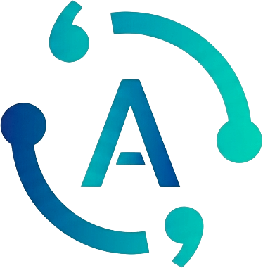

Student-led project
Alavon
Alavon is building a community where people can discover, share, discuss, and adapt AI prompts that have already proven useful in practice. The project also connects with questions relevant to the lab, including how prompt quality should be assessed, how reliably prompts transfer across models and tasks, and how community evaluation compares with automated measures of output quality.
Alavon is a student-led project, and Tianming Liu, director of the UGA LLM Lab, serves as its faculty advisor. The student team leads the project, while Professor Liu advises the team, connects students with relevant resources, and provides perspective as they evaluate technical and product decisions.
The idea
A shared starting point for better prompts
Many people approach an AI model with a task that someone else has already solved. Alavon makes effective prompts easier to find and reuse, so users can begin with a tested approach instead of an empty input box. Community feedback helps show which prompts remain useful across real tasks, models, and contexts.
-
01
Discover
Browse and search community-contributed prompts organized around tasks and models.
-
02
Adapt
Start from a promising prompt and revise it for a particular goal, audience, or workflow.
-
03
Learn together
Use votes, comments, and discussion to compare results and improve shared techniques.

Community tools
Designed around practical use
- Prompt libraryExplore prompts contributed by people working on similar tasks.
- Reuse and refinementAdapt an existing prompt while preserving a useful starting structure.
- Community signalsUse ratings and discussion to understand what performs reliably.
- Contributor discoveryFollow people whose prompts and explanations consistently help.